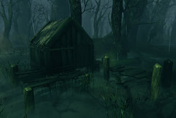

废弃小棚
本站支持中英文站内搜索。带 ↗ 的链接指向外部网站；各页来源版本见页脚。

SwampHut1 SwampHut2 SwampHut3 SwampHut4 SwampHut5 SwampHut1_1 SwampHut2_1
SwampHut3_1废弃小棚是在幽暗沼泽中发现的地点，外形像破败的高脚屋，共有5种变体。
资源
有10%概率出现位于地面的黑暗林山宝箱。若宝箱出现，会由一次性生成的鬼魅守卫，即使白天也会生成。


第三种小屋变体改为有75%概率出现沼泽宝箱，位于木平台下，由两只近战尸鬼守卫。还可能有最多两只远程尸鬼，出现概率分别为20%和30%。
图片库
-
废弃小棚变体2
-
废弃小棚变体3
-
废弃小屋变体5，住着两只 乌鸦


SwampHut1
SwampHut2
SwampHut3
SwampHut4
SwampHut5
SwampHut1_1
SwampHut2_1
Abandoned Huts are Points of interest found in the Swamp. They look like ruined stilt houses and come in 5 variants.
Resources
They have a 10% chance for a Black Forest Chest, the chest is located at the ground level. If the chest is present, it will be protected by a Wraith spawning once even during the day.
The third hut variant has a 75% chance for a Swamp chest instead, the chest is located under the wood deck and is protected by two melee Draugrs. Up to two ranged Draugrs can also guard the location with a 20% and 30% chance each.
Gallery
-
Abandoned Hut variant 2
-
Abandoned Hut variant 3
-
Abandoned Hut variant 5, inhabited by two Crows